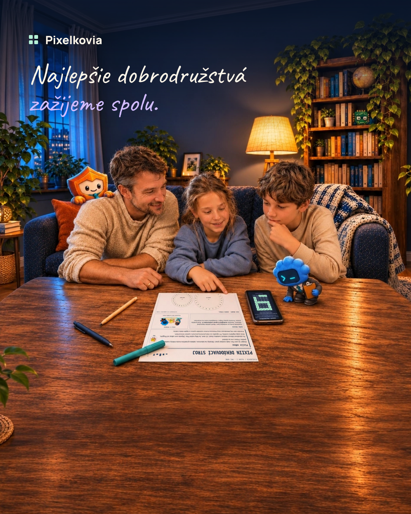

2026-11-26 · 1080 × 1350
Rodina hrá spolu
Ilustračná generovaná rodinná scéna zo schváleného A1 V4; pôvodné herné podklady
PNG · Editovateľné SVG · Zóny


Návrh popisu príspevku
Papierové indície, príbeh v mobile a nápady, ktoré vznikajú pri jednom stole. Pixelkovia je spoločná rodinná výprava: hľadáte doma, lúštite a postupujete príbehom ako jeden tím. S kým by ste si zahrali?